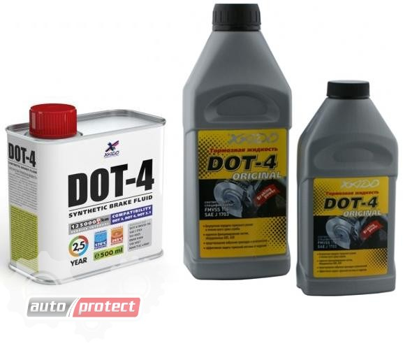

Характеристики
Качество тормозной жидкости тем лучше, чем выше следующие ее параметры и характеристики:
- температура кипения собственно жидкости в том числе, при поглощении 2-4% влаги;
- вязкостно-температурные свойства и их стабильность;
- антикоррозионные и смазывающие свойства;
- совместимость с резиновыми деталями.
Во время торможения тормозная жидкость в рабочих цилиндрах нагревается до сравнительно высоких температур. Если температура достигнет точки кипения тормозной жидкости, то в ней могут образоваться паровые пробки. Тормозной привод при этом становится податливым (педаль проваливается) и эффективность работы тормозов резко снижается. Это имеет особое значение для дисковых тормозных механизмов и скоростных автомобилей.
Основной недостаток используемых в настоящее время тормозных жидкостей - гигроскопичность. Установлено, что за год жидкость в тормозной системе "набирает" 2-3% воды, в результате чего температура кипения снижается на 30-50"С. Поэтому автомобильные фирмы рекомендуют обязательно менять тормозную жидкость 1 раз в 2 года вне зависимости от пробега.
Маркировка
В области тормозных жидкостей за рубежом применяются два основных стандарта: первый - SAE J1703 и второй США - нормы DOT (Departament of Transportation).
В настоящее время изготовители тормозных жидкостей в рекламах, документах и упаковке, как правило, указывают соответствие жидкости нормам DOT.
Для легковых автомобилей в зависимости от конструкции, технической характеристики и года выпуска применяются жидкости, соответствующие требованиям DOT-3, DOT-4 и DOT-5. Нормам DOT-5 отвечают наиболее современные жидкости, предназначенные для скоростных и спортивных автомобилей.